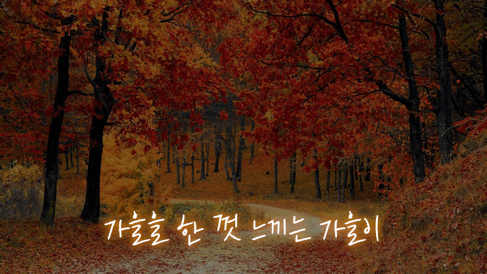

가을 산책 자막 패키지
GOAL감성있는 가을 분위기
ROLE자막 패키지 기획&디자인
가을 산책 VLOG 시리즈의 서정적인 영상미를 극대화하기 위해, 텍스트가 풍경의 일부처럼 자연스럽게 녹아들도록 디자인했습니다. 가독성은 물론, 영상의 감성까지 한 단계 끌어올리는 데 중점을 두었습니다.
디자인 컨셉
Color Palette
#FFE144
#FF8D49
화면의 전체적인 톤을 해치지 않으면서도 시청자의 시선을 부드럽게 이끌 수 있도록, 채도가 낮은 노란색과 주황색을 핵심 컬러로 선정했습니다. 따스한 햇살과 깊어가는 단풍을 상징하는 이 색상 조합은 영상의 계절감을 더욱 풍부하게 만들어 줍니다.
자막 패키지 상세
두 줄 자막 (5종)
한 줄 자막 (2종)
